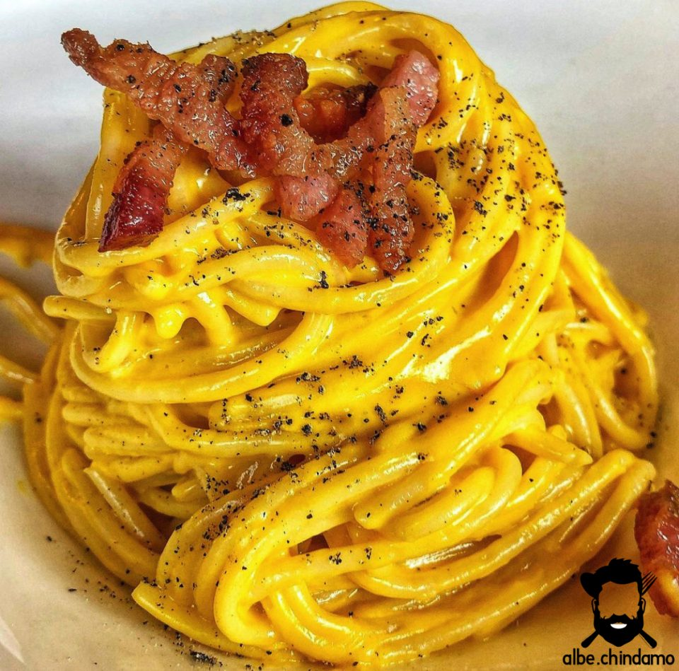

Carbonara

Descrizione
La carbonara, da fare rigorosamente con il guanciale e senza cuocere l'uovo
Ingredienti:
- Pasta
- Guanciale
- Uova
- Pecorino romano
Procedimento
- Cuoci il guanciale in padella (senza olio)
- Metti un tuorlo di uovo a testa più un uovo intero per la tavola in una ciotola
- Aggiungi sale pepe e pecorino e mischia duro
- Cuoci la pasta
- Mischia tutto a fuoco spento!
home